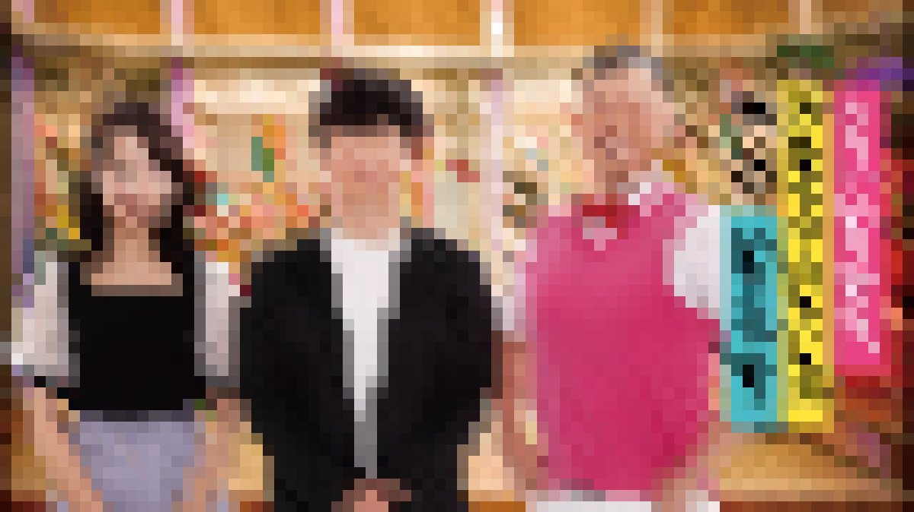

Program
-

番組名: オードリーさん、ぜひ会ってほしい人がいるんです。
概要: オドぜひは「オードリーに会いたい！」という人にクチコミを投稿してもらい、採用された方はスタジオでオードリーに会うというシンプルな番組！
-
番組名: オードリーのオールナイトニッポン
概要: ニッポン放送の深夜番組であるオールナイトニッポンのパーソナリティとしてオードリーが登場！
-
番組名: あちこちオードリー
概要: オードリー春日が大将となり店をオープン！常連客の若林、今注目の有名人をゲストに迎え、本音トークを展開！盛り上がること間違いなしの、ぶっちゃけトーク番組！